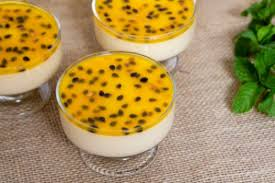

Postres

Quesillo
Un postre tradicional elaborado con leche fresca, cuajada y panela. Se sirve frío con miel de panela o un toque de canela molida.

Higos con Queso
Higos cocidos en miel de panela y servidos con una rodaja de queso fresco. Un contraste perfecto entre el dulzor de los higos y el sabor suave del queso.

Pristiños
Masa frita en forma de rosca, acompañada con miel de panela. Un clásico de la época navideña en Ecuador.

Espumilla
Un postre hecho a base de clara de huevo batida con puré de frutas como guayaba o mora, endulzado con azúcar y servido como un merengue esponjoso.

Arroz con Leche
Arroz cocido en leche con azúcar, canela y pasas. Se sirve frío o caliente, con un toque de canela espolvoreada por encima.

Morocho
Una bebida espesa hecha de maíz morocho cocido con leche, azúcar, canela y pasas. Se disfruta caliente, especialmente en épocas frías.
======= Mousse de maracuya
Tradicionalmente, la mousse se elabora con gelatina . La gelatina debe dejarse hervir en agua fría durante 5 minutos y luego derretirse antes de agregarla a la base.

Pie de limón
Algunos de sus beneficios son: Contiene vitamina C, un gran antioxidante. El limón favorece la salud de la piel, los huesos y el tejido conectivo. Además, promueve la curación y ayuda a absorber el hierro, de acuerdo con la Biblioteca Nacional de Medicina de los E.U.
Galletas Chocochips
Historia. La galleta con pepitas de chocolate fue desarrollada por Ruth Graves Wakefield en 1930. Ella era propietaria de Toll House Inn en Whitman (Massachusetts), un restaurante muy popular que contaba con comida rápida en la década de 1930

Torta de chocolate
El pastel de chocolate, tarta de chocolate o torta de chocolate, es un postre conocido internacionalmente, que se popularizó a finales del siglo XIX y se sirve frecuentemente en reuniones, como bodas y fiestas de cumpleaños
Torta de tres leches
Su nombre proviene de su preparación con tres tipos de leches: evaporada, crema y leche condensada.
Mosaico de gelatina
La gelatina de mosaico contiene varios cubitos de colores de gelatina preparada, que luego se mezcla con una gelatina dulce y cremosa hecha con leche. Esta gelatina fresca y cremosa se puede hacer con los colores y sabores que se prefiera.
>>>>>>> dc745b3936105481f47a9ffccaf4cac20580cb0f